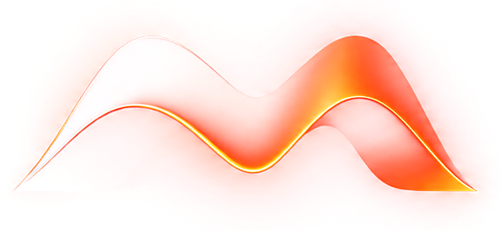

A game engine for Apple silicon, built on Metal. Games in C++ or drawn as visual scripts, made in an editor that feels like Unity, and played on the Mac, the iPhone and the iPad. Open source.

Molten targets Apple GPUs only, so nothing stands between a game and what they offer: tile-based rendering, memoryless render targets, unified memory, hardware ray tracing. The engine, its editor and the games it makes are all native code.
Everything in one window, laid out as you like.
Physically based, in HDR, on Metal.
The pieces Unity has, under names you know.
Write it, draw it, or put it together.
Two complete games, downloaded apart from the engine.
A Mac with Apple silicon, Xcode 15 or its command line tools, and CMake 3.24 or later. The libraries Molten uses are fetched the first time.
git clone https://github.com/gabrielevierti/moltenengine cd moltenengine cmake -B build -DCMAKE_BUILD_TYPE=Release cmake --build build -j ./build/molten # the editor
#include "MoltenMetal.hpp" using namespace molten; struct Spinner { float degreesPerSecond = 90; void update(World& world, Entity self, float dt) { if (Transform* t = world.scene.get<Transform>(self)) t->rotation = t->rotation * Quat(radians(degreesPerSecond * dt), Vec3{0, 1, 0}); } }; MOLTEN_COMPONENT(Spinner, MOLTEN_FIELD(degreesPerSecond))
Free and open source under the GNU General Public License, version 3.